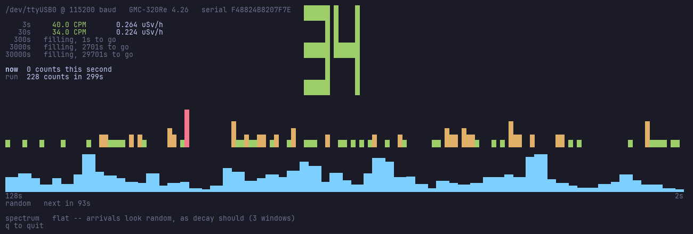
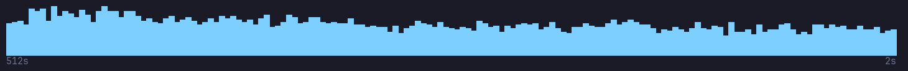
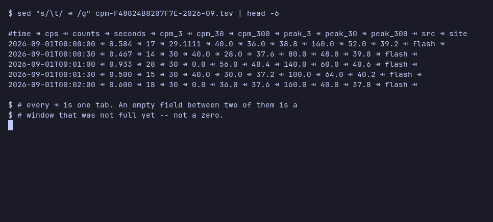

Radiation monitor
A GQ GMC Geiger-Muller counter on the desk · generated 2026-09-05 01:48 by radbeeper 0.1.0 · tube factor 151.5 CPM per µSv/h
A GQ GMC-320 Plus Geiger–Müller counter, plugged into a machine running Alpine Linux as a USB serial device — here shared into a virtual machine over USB pass-through. RadBeeper reads the counter, logs it to tab-separated files, and this page is regenerated from those files by a GitHub Action on every push. The whole of it is forkable: copy your own logs into logs/ and you get a page like this one. Source and instructions. Where the random comes from.
Counter F48824B8207F7E
Counts per minute, by the hour
By day
| Day | Mean CPM | µSv/h | Peak 3s CPM | Rows | Hours |
|---|---|---|---|---|---|
| 2026-09-04 | 37.8 | 0.250 | 44 | 1380 | 11.5 |
| 2026-09-03 | 36.7 | 0.242 | 43 | 2760 | 23.0 |
| 2026-09-02 | 38.8 | 0.256 | 49 | 2592 | 21.6 |
| 2026-09-01 | 41.5 | 0.274 | 59 | 2584 | 21.5 |
| 2026-08-31 | 42.9 | 0.283 | 58 | 2293 | 19.1 |
| 2026-08-30 | 39.3 | 0.259 | 48 | 2294 | 19.1 |
| 2026-08-29 | 40.8 | 0.270 | 50 | 2572 | 21.4 |
| 2026-08-28 | 41.9 | 0.276 | 55 | 2456 | 20.4 |
| 2026-08-27 | 43.6 | 0.288 | 76 | 2414 | 20.1 |
| 2026-08-26 | 46.5 | 0.307 | 87 | 2346 | 19.5 |
| 2026-08-25 | 47.8 | 0.316 | 87 | 2583 | 21.5 |
| 2026-08-24 | 45.2 | 0.298 | 84 | 2270 | 18.9 |
Latest rows
| Time | CPS | 3s | 30s | 300s | Peak 3s | Source | Site |
|---|---|---|---|---|---|---|---|
| 2026-09-04T12:53:30 | 0.110 | 0.0 | 6.0 | 32.8 | 36.2 | 33.2 | 36.5 |
| 2026-09-04T12:53:00 | 0.829 | 0.0 | 50.0 | 33.2 | 36.6 | 33.4 | 36.7 |
| 2026-09-04T12:52:30 | 0.331 | 0.0 | 20.0 | 32.4 | 36.6 | 34.2 | 36.9 |
| 2026-09-04T12:52:00 | 0.343 | 0.0 | 20.0 | 33.0 | 36.8 | 34.8 | 37.0 |
| 2026-09-04T12:51:30 | 0.431 | 0.0 | 26.0 | 34.4 | 37.1 | 35.8 | 37.3 |
| 2026-09-04T12:51:00 | 0.564 | 80.0 | 34.0 | 35.6 | 37.3 | 36.4 | 37.3 |
| 2026-09-04T12:50:30 | 0.862 | 80.0 | 52.0 | 35.8 | 37.2 | 36.8 | 37.3 |
| 2026-09-04T12:50:00 | 0.431 | 0.0 | 26.0 | 35.4 | 37.1 | 37.8 | 37.4 |
| 2026-09-04T12:49:30 | 0.564 | 60.0 | 34.0 | 38.4 | 37.4 | 38.4 | 37.4 |
| 2026-09-04T12:49:00 | 0.789 | 0.0 | 52.0 | 37.6 | 37.2 | 39.2 | 37.3 |
| 2026-09-04T12:48:30 | 0.398 | 140.0 | 24.0 | 36.8 | 37.1 | 37.6 | 37.2 |
| 2026-09-04T12:48:00 | 0.597 | 20.0 | 36.0 | 38.0 | 37.1 | 39.8 | 37.3 |
| 2026-09-04T12:47:30 | 0.530 | 80.0 | 32.0 | 37.8 | 37.1 | 38.6 | 37.1 |
| 2026-09-04T12:47:00 | 0.564 | 40.0 | 34.0 | 38.6 | 37.1 | 38.6 | 37.1 |
| 2026-09-04T12:46:30 | 0.630 | 20.0 | 38.0 | 37.8 | 37.0 | 40.0 | 37.2 |
| 2026-09-04T12:46:00 | 0.617 | 40.0 | 36.0 | 38.8 | 37.1 | 39.2 | 37.2 |
| 2026-09-04T12:45:30 | 0.762 | 0.0 | 46.0 | 39.6 | 37.2 | 42.0 | 37.2 |
| 2026-09-04T12:45:00 | 0.862 | 80.0 | 52.0 | 41.4 | 37.0 | 41.4 | 37.2 |
| 2026-09-04T12:44:30 | 0.530 | 60.0 | 32.0 | 39.2 | 36.9 | 41.0 | 37.3 |
| 2026-09-04T12:44:00 | 0.630 | 0.0 | 38.0 | 40.4 | 37.2 | 41.4 | 37.4 |
| 2026-09-04T12:43:30 | 0.597 | 80.0 | 36.0 | 41.4 | 37.4 | 42.2 | 37.5 |
| 2026-09-04T12:43:00 | 0.514 | 0.0 | 34.0 | 41.0 | 37.4 | 42.2 | 37.5 |
| 2026-09-04T12:42:30 | 0.729 | 80.0 | 44.0 | 41.8 | 37.4 | 42.2 | 37.4 |
| 2026-09-04T12:42:00 | 0.431 | 0.0 | 26.0 | 41.6 | 37.2 | 44.0 | 37.4 |
| 2026-09-04T12:41:30 | 0.729 | 100.0 | 44.0 | 42.8 | 37.4 | 43.0 | 37.4 |
| 2026-09-04T12:41:00 | 0.796 | 60.0 | 48.0 | 42.0 | 37.3 | 42.0 | 37.3 |
| 2026-09-04T12:40:30 | 1.061 | 100.0 | 64.0 | 38.0 | 37.1 | 39.0 | 37.1 |
| 2026-09-04T12:40:00 | 0.446 | 0.0 | 30.0 | 36.0 | 37.0 | 37.4 | 37.2 |
| 2026-09-04T12:39:30 | 0.696 | 60.0 | 42.0 | 36.6 | 37.1 | 36.6 | 37.3 |
| 2026-09-04T12:39:00 | 0.829 | 80.0 | 50.0 | 35.0 | 37.2 | 36.8 | 37.2 |
| 2026-09-04T12:38:30 | 0.597 | 40.0 | 36.0 | 34.4 | 37.1 | 34.6 | 37.1 |
| 2026-09-04T12:38:00 | 0.630 | 40.0 | 38.0 | 33.8 | 36.9 | 36.4 | 36.9 |
| 2026-09-04T12:37:30 | 0.696 | 0.0 | 42.0 | 36.4 | 36.9 | 38.0 | 37.0 |
| 2026-09-04T12:37:00 | 0.652 | 60.0 | 38.0 | 37.8 | 36.8 | 37.8 | 36.9 |
| 2026-09-04T12:36:30 | 0.530 | 40.0 | 32.0 | 36.0 | 36.7 | 36.6 | 36.7 |
| 2026-09-04T12:36:00 | 0.199 | 40.0 | 12.0 | 35.2 | 36.7 | 35.4 | 37.0 |
| 2026-09-04T12:35:30 | 0.729 | 80.0 | 44.0 | 35.2 | 37.0 | 35.2 | 37.0 |
| 2026-09-04T12:35:00 | 0.530 | 140.0 | 32.0 | 33.6 | 36.9 | 34.0 | 36.9 |
| 2026-09-04T12:34:30 | 0.431 | 0.0 | 26.0 | 33.6 | 36.9 | 38.6 | 37.2 |
| 2026-09-04T12:34:00 | 0.720 | 80.0 | 44.0 | 37.2 | 37.1 | 37.2 | 37.1 |
| 2026-09-04T12:33:30 | 0.464 | 40.0 | 28.0 | 36.0 | 36.9 | 36.8 | 37.4 |
| 2026-09-04T12:33:00 | 1.127 | 80.0 | 68.0 | 36.6 | 37.4 | 37.0 | 37.4 |
| 2026-09-04T12:32:30 | 0.928 | 0.0 | 56.0 | 33.6 | 37.1 | 36.6 | 37.3 |
| 2026-09-04T12:32:00 | 0.331 | 0.0 | 20.0 | 33.6 | 36.8 | 34.8 | 37.0 |
| 2026-09-04T12:31:30 | 0.398 | 0.0 | 24.0 | 34.4 | 37.0 | 35.6 | 37.3 |
| 2026-09-04T12:31:00 | 0.171 | 0.0 | 12.0 | 33.8 | 37.3 | 35.6 | 37.6 |
| 2026-09-04T12:30:30 | 0.497 | 20.0 | 30.0 | 36.4 | 37.6 | 39.8 | 37.6 |
| 2026-09-04T12:30:00 | 0.530 | 40.0 | 32.0 | 39.6 | 37.6 | 41.0 | 38.0 |
| 2026-09-04T12:29:30 | 1.028 | 80.0 | 62.0 | 40.6 | 37.9 | 40.6 | 38.0 |
| 2026-09-04T12:29:00 | 0.497 | 0.0 | 30.0 | 36.8 | 37.6 | 41.0 | 37.7 |
| 2026-09-04T12:28:30 | 0.564 | 40.0 | 34.0 | 41.0 | 37.6 | 41.0 | 37.6 |
| 2026-09-04T12:28:00 | 0.631 | 80.0 | 38.0 | 39.4 | 37.4 | 39.4 | 37.5 |
| 2026-09-04T12:27:30 | 0.933 | 80.0 | 56.0 | 37.8 | 37.5 | 37.8 | 37.6 |
| 2026-09-04T12:27:00 | 0.467 | 20.0 | 28.0 | 35.8 | 37.3 | 37.6 | 37.5 |
| 2026-09-04T12:26:30 | 0.300 | 40.0 | 18.0 | 36.8 | 37.5 | 38.6 | 37.6 |
| 2026-09-04T12:26:00 | 0.600 | 0.0 | 36.0 | 38.4 | 37.6 | 38.6 | 37.7 |
| 2026-09-04T12:25:30 | 1.033 | 60.0 | 62.0 | 36.0 | 37.5 | 36.0 | 37.6 |
| 2026-09-04T12:25:00 | 0.722 | 40.0 | 42.0 | 32.6 | 37.3 | 32.8 | 37.3 |
| 2026-09-04T12:24:30 | 0.398 | 0.0 | 24.0 | 31.4 | 37.2 | 32.2 | 37.4 |
| 2026-09-04T12:24:00 | 1.193 | 0.0 | 72.0 | 31.2 | 37.4 | 33.0 | 37.4 |
The last 60 rows of 28,544. Read the full chart: cpm-F48824B8207F7E-2026-08.tsv · cpm-F48824B8207F7E-2026-09.tsv — tab-separated, one row every 30 seconds.
How to use it
What you need
A GQ GMC-320 Plus, plugged into a USB port, switched on. That is the hardware, and no amount of software substitutes for it: every number on this page came off a real tube over a real serial port. A GMC-300 works too — RadBeeper tries its 57600 baud as well as the 320's 115200 — and a 500 or 600 is found and read, but its tube is not an M4011, so it needs its own --cpm-per-usvh.
- The USB cable that came with it. A charge-only cable carries no data, and is indistinguishable from an empty port until you try another one.
- The counter switched on. Its USB-serial chip is powered by the counter, not by the bus — a flat 320 enumerates as nothing.
- A kernel with
ch341. The 320 Plus presents as a CH340.linux-ltsandlinux-rpicarry the driver; Alpine'slinux-virtdoes not, which is the commonest reason a counter that is plugged in cannot be found. - Membership of
dialout. The serial node isroot:dialoutand RadBeeper does not want root.
Plugged in and working, Linux says so: dmesg ends with ch341-uart converter now attached to ttyUSB0 and /dev/ttyUSB0 exists. USB pass-through into a VM counts — these logs came from one — provided the guest kernel is one of the two that has the driver.
No counter yet? radbeeper --source sim watch draws the whole monitor against a synthetic Poisson background.
Install
One stdlib Python file. No packages, no build, nothing to compile — the install is a copy.
git clone https://github.com/vonglurt/radbeeper.git cd radbeeper && make install doas adduser $USER dialout # then log in again
The read side is also a Rust crate, if a native binary suits the machine better: cargo install radbeeper, or a static musl build from the releases page for x86_64, aarch64, armv7 or the Pi Zero's armv6. It does probe, cpm and watch; everything that writes these logs stays in the Python.
Find the counter
radbeeper probe

If it finds nothing it says which of four things went wrong, because they have four different fixes: no serial node at all (often a kernel with no ch341 — Alpine's linux-virt has none, linux-lts does), permission on the node, something that is not a GMC, or a port another reader already holds.
Watch it
radbeeper watch


The counter's own reading is a rolling 60-second count — one number with one time constant. RadBeeper counts the blips itself and keeps four windows at once, each a factor of ten apart.
- 3 sWatching a source come and go as you move it. Jumpy, and honestly so.
- 30 sReading the room. Settled enough to compare two places.
- 300 sA number worth writing down.
- 3000 sFifty minutes. What the background here actually is, once the day's traffic through the room has averaged out.
A window shows nothing until it is full, and says how long it still needs. A three-second CPM built from one sample is twenty times noisier than it looks, and drawing it as though it were settled is how a 25 CPM background reads as 60 and somebody goes hunting for a leak.

Is anything periodic?
The monitor also accumulates a power spectrum of the per-second counts. Decay is a Poisson process and the spectrum of a Poisson process is flat — so a featureless strip is the good answer, and says that nothing is arriving on a schedule.

A peak is the interesting case: mains hum on the tube's supply, a fan carrying a source past, a loose connector, firmware that batches its reporting. In the time domain all of those look exactly like more counts. Averaging successive windows is what makes a real line climb out of the noise — one periodogram of a Poisson process is flat in expectation and violently noisy in fact.
No counter on the desk? Every command runs against a built-in source, and it is a real one — radioactive decay is a Poisson process, so the simulator draws Poisson samples.
radbeeper --source sim --sim-cpm 400 watch
Random numbers out of decay
The monitor also keeps an entropy pool and prints a line of hex whenever the samples have earned it. Not modelled — measured: the counts coming back over the serial link are measurably burstier than Poisson, so the bits per second are estimated from the samples themselves and pushed to the far end of a 99% confidence interval before anything is emitted.
radbeeper random
Where the random comes from — the counts against the model, the bits accumulating second by second, what the serial link's one-second resolution costs, and every line emitted with the counts behind it.
Log it
radbeeper service
A row every 30 seconds into a dated file per counter, cpm-<serial>-YYYY-MM.tsv — which is rotation by construction, with no cron entry and nothing renaming a file while a service appends to it. Each row carries the peak every window reached since the last one, so a source that came and went between two rows still leaves a trace.

Tabs are invisible, and that matters here: an empty field is not a zero, it is a window that was not full yet.

The counter also records to its own flash whether or not anything is listening. radbeeper backfill reads that back and fills the gaps — one row per slot, never over a live measurement, and an hour nobody recorded stays an hour nobody recorded.
radbeeper backfill
Publish it
radbeeper export --logs logs -o index.html
This page. Fork the repository, copy your cpm-*.tsv into logs/, push, and the workflow rebuilds and commits it — served by GitHub Pages with no build step. There is nothing to install in the workflow: the generator is the same one file, which is also why the page cannot drift from the log format.